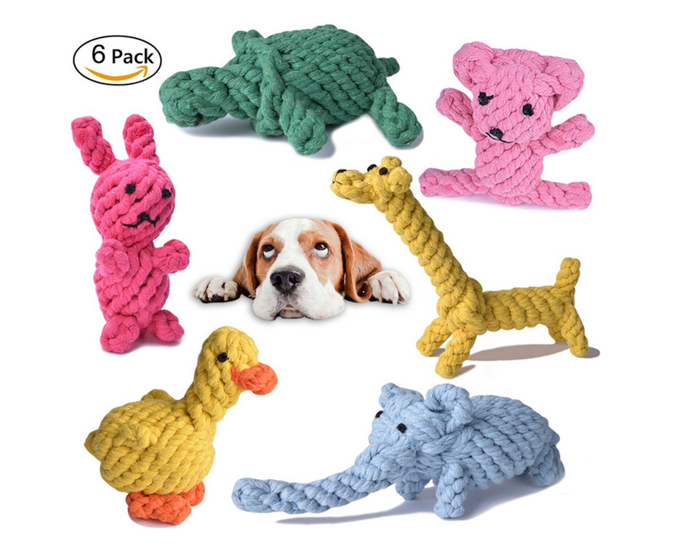
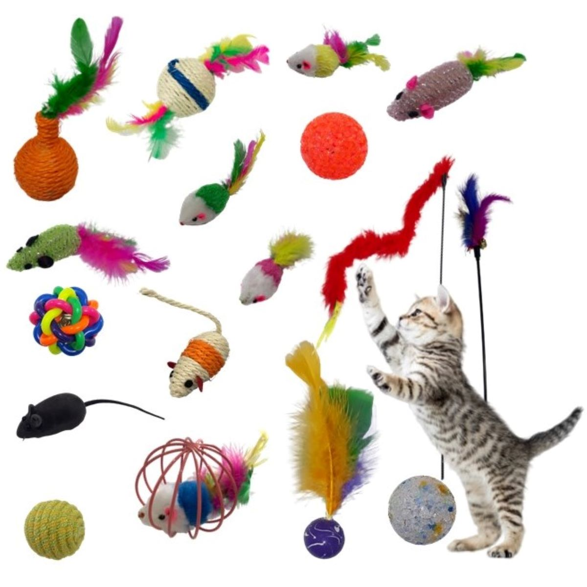
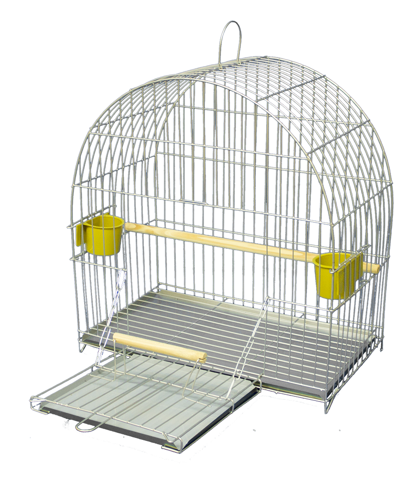
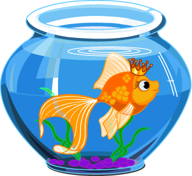
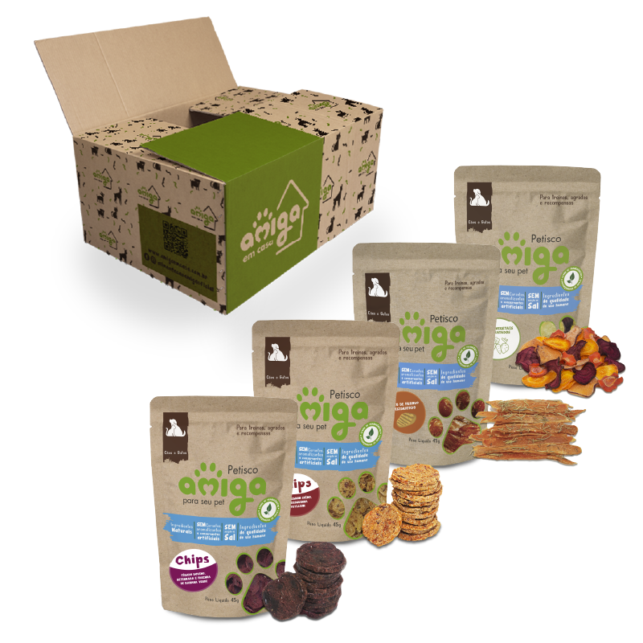
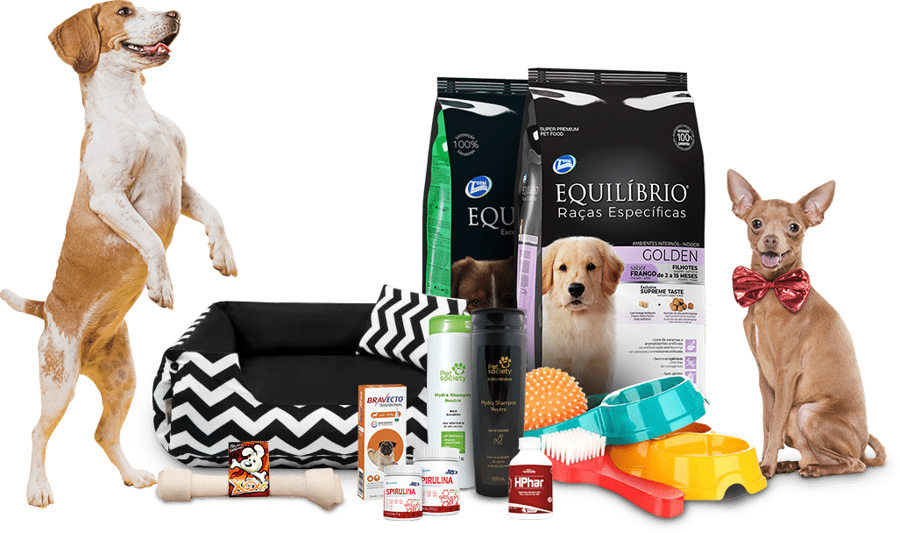
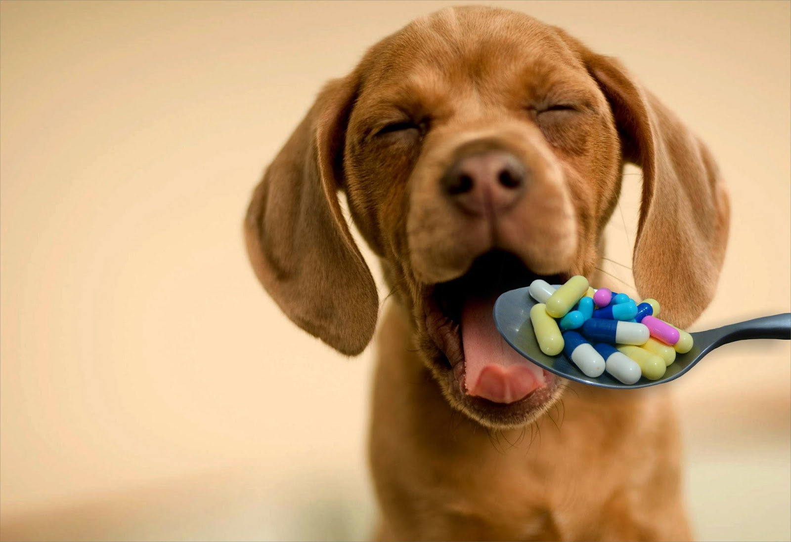
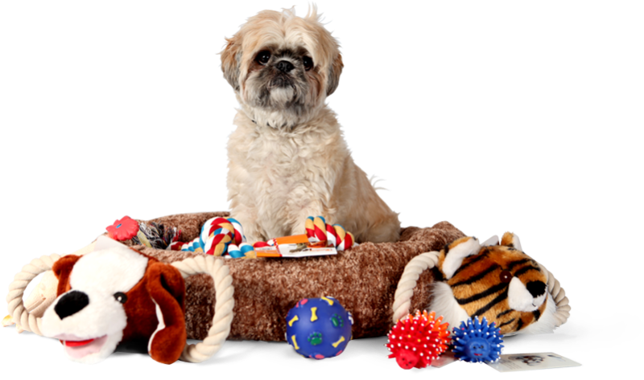

Os brinquedos são fundamentais para os pets conseguirem aliviar parte do estresse e conseguirem se divertir
enquanto vocês estão longe. Dar brinquedos novos demonstram para eles que vocês sentem carinho e amor por eles.
Além de que com os brinquedos, seus móveis e cortinas ficam seguros das unhas e dentes dos bichanos. Temos diversos produtos para distrair
seu pet da melhor forma possível.

Todo pet precisa (e merece) ter um lugar adequado para dormir. Casinhas e camas deixam os animais de estimação protegidos e seguros.
Quase sempre os donos dos pets investem nesses itens, afinal, os bichinhos começam a fazer parte de suas famílias.
Para tanto, o pet shop deve estar preparado a oferecer uma variedade de casinhas, camas, almofadas, colchonetes, cobertores, portões, grades, cercas e caixas e bolsas para transporte.

Cães, gatos, pássaros, roedores e peixes exigem alimentos específicos. A variedade de rações surge para atender às necessidades básicas de alimentação, assim como cuidados veterinários especiais.
É essencial que o pet shop disponha de ração seca, úmida e medicamentosa, tanto para filhotes quanto para adultos.
O consumo de rações que tratam doenças e problemas dos animais, principalmente cães e gatos, tem se expandido.
Rações light para animais com excesso de peso, sem sódio para os que sofrem de insuficiência renal e, ainda, antialérgica para os de pele sensível estão se destacando por suas especialidades — e são cada vez mais procuradas pelos donos dos pets.

Quem não gosta de ter os seus bichinhos de estimação cheirosos e limpinhos? Para mantê-los sempre bem cuidados, há produtos próprios para higiene e limpeza. Alguns deles são:
Xampus e condicionadores, hidratantes e sabonetes, perfumes e colônias, tapetes higiênicos, fraldas, eliminador de odores,
alicate de unha, escovas e cremes dentais. Produtos para a saúde dos pets como antibióticos, anti-inflamatórios, antipulgas, vacinas, vitaminas e vermífugos são igualmente importantes — principalmente se o pet shop dispõe de uma clínica veterinária.

Com o nosso serviço de manipulação de remédios conseguimos aplicar e personalizar as doses, para melhor suprir os problemas do seu pet,
preços mais em conta, possibilidade de associar medicamentos, além de terem formatos atrativos para os pets, pois temos que concordar
que remédios não são atrativos nem pra gente, quanto mais pra eles.

Acessórios basicamente servem para o seu pet se sentir mais amado e querido, aumentando a relação que vocês tem entre si.
Então compre aqui os acessórios para seu pet se sentir querido e confortável.